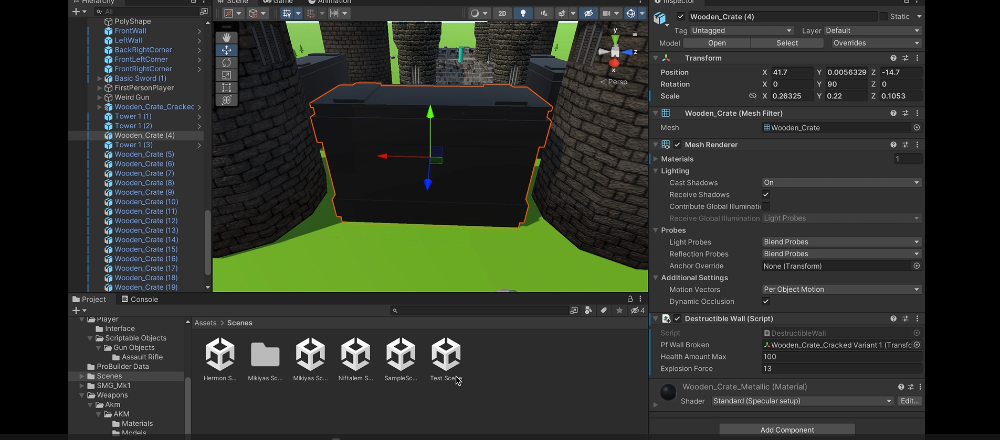

Developing a Machine Learning Model

This was a semester long collaborative, project based learning system provided by the Minnesota State University, Mankato CS department. The goal was to enhance customer and product segmentation by using a companies database by estimating the likelihood of customers or products transitioning between segments. This approach aims to provide a deeper understanding of how segments evolve over time, helping to better analyze and predict changes in customer and product behavior.
Defend the Castle

"Defend the Castle" is a tower defense game where players must protect their castle from
waves of enemies. The game involves using various wepons to defend your castle
fend off different types of enemies. Players earn points and resources by
defeating enemies.
(Click on Image for Githun repo)
Pantry Tracker
 Pantry Tracker is a React application that helps you manage your pantry items and generate recipes based on
the available ingredients.
The application integrates with the OpenAI API to create recipes using the items in your pantry.
Pantry Tracker is a React application that helps you manage your pantry items and generate recipes based on
the available ingredients.
The application integrates with the OpenAI API to create recipes using the items in your pantry.
(Click on Image for app)
Check out my resume for more things I do to kill time ;)